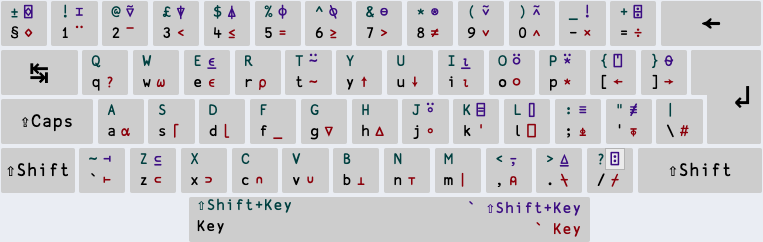
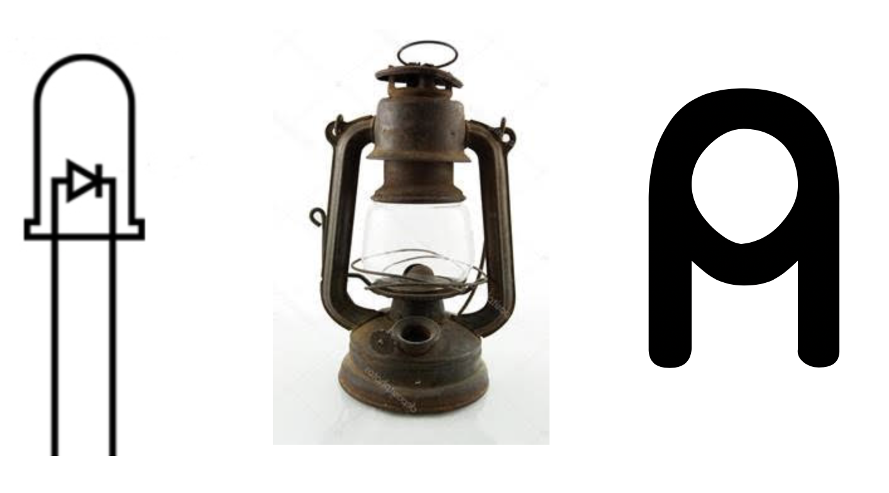

Introduction
Contents
Introduction#
A language that doesn’t affect the way you think about programming is not worth knowing. –Alan Perlis
Who is this for?#
I wrote this to be the book I would have wanted to read when I started to learn APL. An introduction to APL for an experienced practitioner from a different programming language or two. We all learn in different ways, and I prefer the fundamental concepts laid bare first, and then learn by example.
I came to APL after discovering a file of solutions to the Advent of Code 2015 challenge in K, an APL derivative. That’s around 100 lines of actual code, and whilst I didn’t understand any of it, I kept looking at it, trying to figure out which of the 50 problems (well, 49) this was a solution to. Each of my Python solutions typically ran to 50-100 lines+ for the bulk of the problems.
Turns out it was the whole lot. That blew my mind.
What is APL?#
APL is an array language, and one of the oldest programming languages still in use today, next to FORTRAN, Lisp and COBOL. APL uses its own curious-looking symbols, like ⍎⌽⍕⌈*○≡⍬, rather than reserved words written out in English like most other languages, like C or Python. As a language, APL sits at a very high level of abstraction, making it well suited to ultra-concise formulations of algorithms.
APL is a language that time is only now beginning to catch up with. Modern processors sport dedicated vector-oriented instructions and APL presents a high degree of mechanical sympathy ideally suited to SIMD instructions and by often being completely branchless in nature. APL, and its more punk rock little sister, K, really fly. APL can offer unprecedented programmer efficiency, as well as all-out execution speed.
But isn’t APL dead? APL is alive and well.
Why should I learn APL?#
You will have your own motivations for wanting to learn APL. If you’re searching for the hottest thing on the market right now, to land a job at a FAANG or pad your resumé with the most marketable skills, there are many other programming languages that will offer a better return: Go, Java, Rust… APL doesn’t make a show in the TIOBE index in the top 100 “most popular” programming languages. Apparently, COBOL, Logo and AWK are all more “popular” than APL, at the time of writing. That’s not to say there aren’t extremely well-paid jobs around for engineers with skills in the “Iverson-family” languages (APL, J, K, Q etc), especially in finance. There are.
However, learning APL will reward you in other ways. Perhaps the old trope about “expanding your mind” is tired, but if your background is “C-like” – C, C++, Java, Python etc – you will be exposed to a new way of solving problems. In fact, learning new programming languages that come from a different paradigm is a force multiplier for your brain.
Talking about Lisp, but equally applicable to APL, Eric S. Raymond says in his essay How to become a hacker:
Lisp is worth learning for a different reason — the profound enlightenment experience you will have when you finally get it. That experience will make you a better programmer for the rest of your days, even if you never actually use Lisp itself a lot.
On the topic of Lisp, one of my favorite xkcd strips talks about Lisp’s parentheses as ‘elegant weapons for a more civilized age’, paraphrasing Star Wars. It could also have been said about APL.

APL was conceived as a notation for thought. It actually took years before it even had an actual implementation as a programming language. APL is a very natural way to express algorithms. Ken Iverson, the creator of APL, was awarded the ACM Turing Award in 1979 for his work on APL, and his accompanying paper, Notation as a Tool of Thought is somewhat of a computer science milestone. Dyalog, a leading commercial APL solutions provider, make a reference to this in their corporate tag-line: “The Tool of Thought for Software Solutions”.
If you persist, you may discover an added bonus: code you write in other languages suddenly becomes more concise and efficient, too.
…but it’s unreadable!#
Every time APL gets a mention on Hacker News (it happens regularly), someone chirps up in the comments that “APL is unreadable”, so let’s deal with that upfront.
crt←{m|⍵+.×⍺(⊣×⊢|∘⊃{0=⍵:1 0 ⋄ (⍵∇⍵|⍺)+.×0 1,⍪1,-⌊⍺÷⍵})¨⍨⍺÷⍨m←×/⍺} ⍝ From APL Cart
There it is – perfectly readable: squiggle, squiggle, greek letter, weird symbol….
The key is that readability is in the eye of the beholder. To an APL programmer, the above implementation of the Chinese Remainder Theorem is perfectly readable. Claiming that something is unreadable because you can’t read it is intellectually dishonest. I don’t speak, or indeed read, Japanese, but that doesn’t make Japanese in any way unreadable. As master haiku smith, Bashō (松尾 金作), exclaimed:
The summer grasses. // All that remains // Of warriors’ dreams.
What is a fairer observation is that APL doesn’t look anything like the other programming languages you know, and yes, learning APL sure presents a different kind of challenge. If you’re a seasoned (say) Python programmer, and you decide to pick up Ruby, you can reasonably expect to follow code written by others from day 1, and learn enough syntax within a day or two to write code yourself. Sure, it takes a bit longer to find your way around the standard library and learn how to write idiomatic Ruby, but still. If you’ve learned a few languages like that, picking up another represents known and quantifiable effort.
Let’s be honest: there will be more initial friction when learning APL – for starters, your keyboard doesn’t even have the squiggly symbols! Having said that, APL is a tiny language – there is negligible amounts of syntax to pick up, and believe it or not, actually quite easy to learn at a superficial level, once you get past the practical barriers.
What takes longer is to grasp the APL way – how to wield it idiomatically, if you like. Learning how to solve problems the data-parallel way, no loops, no branching, is the key to writing APL that rocks.
Once you get used to it, APL is more readable than more verbose languages [ citation needed ]. It strips away all the fluff, leaving only the algorithmic intent. John Earnest, creator of oK, wrote a humorous blog post on the topic, and Aaron Hsu’s presentation on APL patterns and anti-patterns make some of the same points in a more serious vein.
The last example from John Earnest’s blog post poses the hypothetical question – which is more readable, the JavaScript
let max = list[0];
for (let i=0; i<list.length; i++) {
max = Math.max(list[i], max);
}
or the APL (although John used the corresponding K version)
⌈/
Don’t I need a lot of mathematics?#
No, not really, no.
Whilst APL can be traced back to Iverson’s attempts at fixing some of the shortcomings of traditional mathematical notation, you don’t have to be a math-wiz to understand, or benefit from, APL. If you’re familiar with sums and products, or if you know another programming language, that’s all you need. If you do have a background in maths, especially in linear algebra, you’ll no doubt recognize some concepts along the way.
A note on our APL subset#
Dyalog’s APL dialect, which we’ll chiefly work with here, has been around for a long time, and carries with it a lot of history in the shape of backwards compatibility. APL has also evolved a lot over the years. Dyalog’s APL is really two rather different languages rolled into one: traditional style, which is procedural, and the newer dfn (pronouced DEE-fun) style, which is functional(ish, but let’s not quibble). For the purposes of this exercise, we’re going to pretend that the traditional style doesn’t exist.
When we claim that there are no if-statements or loops in APL, how come one can write
∇ FizzBuzz end;i
:For i :In ⍳end
:If 0=15|i
⎕←'FizzBuzz'
:ElseIf 0=3|i
⎕←'Fizz'
:ElseIf 0=5|i
⎕←'Buzz'
:Else
⎕←i
:EndIf
:EndFor
∇
which certainly looks both iffy and loopy – and dare I say even moderately readable, almost Pascal-chic? This is an example of an APL trad-function, which we from now onwards will pretend doesn’t exist. This isn’t a value judgment so much as a practical one in the context of this book. We will not cover the traditional style, nor Dyalog’s object orientation extensions, and for simplicity’s sake, when we from now on talk about APL, take that to mean “our subset of APL”.
As an historical aside, the “newer” dfn style first appeared in Dyalog 8.1, from early 1997, according to John Scholes. So not that new.
Not covered#
Specifically, we’re not going to cover tradfns, OO, inverses, the trigonometric functions, complex numbers, variant, I-beams, spawn, threads, isolates, format, most of the ⎕-fns, .NET integration and probably many more.
Is terser better?#
APL’s raison d’être is to cut out the noise, to become an extension of thought. A lofty aim, for sure. APL code can be exceptionally compact; no other general-purpose programming language (apart from its siblings) gets close. No bit of code we write here will likely be longer than a few lines, and anecdotally, from personal experience, the difference runs to perhaps an order of magnitude compared with Python.
Is terser better? Opinions differ here. APLers, only half-jokingly, say they never scroll. Arthur Whitney, the creator of K, reputedly hates scrolling, even when writing in C:
The K binary weighs in at about 50Kb. Someone asked about the interpreter source code. A frown flickered across the face of our visitor from Microsoft: what could be interesting about that? “The source is currently 264 lines of C,” said Arthur. I thought I heard a sotto voce “that’s not possible.” Arthur showed us how he had arranged his source code in five files so that he could edit any one of them without scrolling. “Hate scrolling,” he mumbled.
(from Vector)
Being able to see your whole implementation on a single page of code cuts down on context switching, and at least anecdotally makes mistakes easier to spot.
Other resources#
If you’re interested in the history of APL, a good read is Kromberg and Hui’s weighty paper APL since 1978. Morten and Roger do all their own stunts.
J Software maintains a rich collection of APL-related publications.
Vector is the journal of the British APL Association.
A comprehensive, but now a bit outdated, reference is Legrand’s door stopper Mastering Dyalog APL, all 800+ pages of it. It covers a lot of ground that we’re not touching upon here. Work is afoot to update MDAPL to cover a more recent version of Dyalog.
As you get a bit further along your path to APL mastery, the APL Cart indexed idiom collection is an amazing resource.
The chat room APL Orchard on Stack Exchange features some of the sharpest minds on the array programming circuit. It’s a welcoming place for newbies, too, and every now and then hosts so called cultivations – impromptu interactive lessons. A list of old cultivations is here. Drop in and say ‘hi’ – chances are that you will be given a private APL intro lesson (in public).
The APL Wiki is a rich and growing source of knowledge.
Dyalog’s own developer documentation is a reference - rich depth, but not the easiest place to learn new things from. Dyalog TV hosts Dyalog’s back catalog of webinars and lots of conference presentations with a lot of varied nuggets. There is also the Dyalog forums although a bit low-volume.
Dyalog’s docs for the dfns workspace is a treasure trove of APL exotica. It’s what passes as a “standard library” for Dyalog, and some of it is useful for everyday coding (like segs and iotag), and other stuff perhaps less so – but you can learn a lot by looking at its implementations to see what “real APL” looks like.
Speaking of “real APL”, Dyalog has a lot of public code in their github, which is a great resource.
Ok, I’m convinced, how do I get started?#
There are a couple of options. To get started right now, you can head to TryAPL, which is a web version of Dyalog APL’s latest and greatest release. That should work for most of the stuff we’ll do here.
Note
Dyalog APL is a commercial product, not open source. Fortunately, they offer a generous non-commercial free to use clause in their licensing terms, so you can download and install Dyalog APL locally without cost, as long as you’re not making money from it.
Dyalog consists of the APL interpreter itself, and an IDE. You’ll also need to install a font with the APL glyphs (as the “squiggles” are actually called) and a keyboard layout, depending on your platform. I am using Dyalog version 18 on MacOS, which comes with an IDE called RIDE. On Windows you get a different IDE.
There is also GNU APL, and whilst there are similarities, its dialect is a bit different. GNU APL was made to be a libre software reimplementation of IBM’s APL2, and Dyalog has moved on quite a bit from this. The examples we present here are unlikely to all function as-is in GNU APL. Other options are ngn/apl and dzaima/apl, both hobbyist implementations that roughly implement the subset we’re interested in.
Dyalog also has an excellent Jupyter kernel that allows you to use APL in the Jupyter notebook interface – which indeed is how this book is written.
Assuming you’ve managed to get the APL keyboard layout installed, you’ll be hunting and pecking for a while. It takes a few days to learn where the most useful glyphs reside. The Dyalog IDE has the language bar at the top which you can also use – and hovering over a glyph will indicate where it resides on the keyboard. Here’s what my RIDE shows in terms of keyboard layout:

Are you ready? Let’s begin.
Our first tentative steps#
The first thing we’ll do is to specify our index origin. In most programming languages in use today, arrays are indexed starting from 0, with a few notable exceptions (for example Julia and Lua). In APL, the index origin is a configurable option. Leaving aside for a moment as to if this is a good idea or not, it’s one of those things that sooner or later will catch you out. We’ll try to always be explicit. If, when trying to run code someone else wrote, you’re faced with an INDEX ERROR, it’s worth changing the index origin to see if that makes a difference.
Dyalog’s default index origin is 1, but we’ll set it to 0 for the least possible surprise. We won’t use anything where this actually matters for a while, but let’s get used to it from the beginning.
⎕IO ← 0 ⍝ Index origin gets 0
We pronounce this as “quad-eye-oh gets zero”. The left-arrow, ←, called Gets, is the symbol for assignment. The green text following the ⍝ symbol is a comment. APL’s comment symbol is called Lamp – and a bit of an aide-memoire – comments should illuminate the code. On my keyboard, it lives on the comma-key, and is a useful first APL key sequence to memorise. Does it look like a lamp?

Maybe an LED? Or a kerosene lamp, depending on how long you’ve been doing APL for. Anyway - a comment.
⍝ This line does nothing!
The usual arithmetic operations work as expected, don’t they?
2*5 ⍝ Wait... wot?
Ok, that may have come as a surprise. It turns out that * is the symbol for exponentiation, not multiplication. If we want to multiply, we need to use × (which lives on the - key):
2×5
Ok, what about division?
6/2 ⍝....?
Nope. The slash does something decidedly not-division. We’ll get back to that one later. Division is ÷, not /:
20÷4 ⍝ Division is ÷, not /
Negative numbers are not written with the traditional minus-sign, but with a special glyph, the High minus: ¯
¯87 ⍝ Note: not -87
Here’s another surprise:
2×5+7
In any other language, or indeed on a calculator, that would have given 17. So what’s going on here? We’re taught that multiplication goes before addition since year 1 in school. We’ve stumbled on one of the things in mathematical notation that motivated Iverson to create APL: in mathematics, operator precedence is kind of awkward and irregular.
In APL, everything evaluates strictly right to left. If you want to bend this evaluation order, you’ll need parentheses.
(2×5)+7
We can assign a value to a variable using Gets (←) that we met earlier:
a ← (2×5)+7 ⍝ a gets 17.
a ⍝ Just evaluating the variable returns its value
⊢a ← 42 ⍝ a gets 42, and please evaluate it so I can see the value
The glyph ⊢ is called Right tack, and is a function referred to as Same. It simply returns its argument. Used like this it allows us to show the result of an expression even if the expression itself wouldn’t normally return a result. Right tack might seem like a pretty pointless function, but we’ll put it to good use later in different contexts. To “print” the value of a variable we can also use Quad gets, ⎕ ←:
⎕ ← a
As a mnemonic, you can think of the Quad (⎕) glyph representing your computer screen (or a piece of printer paper) in this context. And for the avoidance of any doubt, the Quad glyph really is a little rectangle, and not the symbol used to show a character set mismatch on badly formed web pages.
APL variable names follow mostly similar rules to other programming languages – any combination of letters (upper, and lower case), digits (apart from the first character), and the underscore symbol (_):
⎕ ← fiftySeven ← 57
⎕ ← five38 ← 538
⎕ ← My_Variable_Name ← 'hello world'
One convention you’ll occasionally see is the _ variable, which is sometimes used to denote a value we don’t care about. There is nothing special about a variable called _ – it’s just a convention.
(a b _ d) ← 3 1 4 1 ⍝ Don't care about the third value
a b d
There are two additional characters you can use in names, ⍙ and ∆, if you feel the need to add extra spice in the lives of others reading your code. An advantage of APL’s use of glyphs instead of reserved words is that it’s impossible to create names that clash with internal or reserved words in APL.
You can of course use whatever naming convention that pleases you, but Adám from Dyalog has written up an informal style guide that’s useful reading. As APL lends itself to a terse style, long, rambling, Java-esque variable names are frowned upon. Here are some opinionated home truths from the Carlisle Group, too, to consider on your APL journey.
Valence#
Valence (sometimes called arity, too) refers to the way that functions expect arguments. In APL, we talk about monadic and dyadic functions and operators (and occasionally niladic, too).
There is a central tenet when writing about programming that for every mention of the word monad you lose half your readership. We can blame Team Haskell for that. Fear not – we’re staying right out of category theory. Whilst APL has monadic functions and operators, the term predates Haskell by some margin, and really refers to something different altogether. Hey, Haskell, make up your own words, will you? Just kidding, we’re huge Haskell fans.
APL functions can take arguments on either side, just like you’re perfectly used to with arithmetic operators in many other languages (not Lisps):
1 + 1 ⍝ Infix function application, dyadic +
In a Lispy language, function application is always monadic, even for arithmetic, so you’d write
(+ 1 1)
When we say that a function is dyadic in APL, all we mean is that the function takes both a left, and a right argument, like the + example above. A monadic function, conversely, is a function that only takes a right argument, for example, Factorial, !:
!7 ⍝ Monadic ! is factorial: 1×2×3×4×5×6×7
Some APL functions can be either monadic or dyadic, and in many cases these have different meanings – an endless source of confusion joy for the beginner. For example:
7×3 ⍝ Dyadic × is multiplication
ׯ7 ⍝ Monadic × is 'direction', or signum (the sign, in our case). Thanks.
Tip
In the Dyalog IDE, if you hover over a glyph in the language bar, it will show brief examples of both its monadic and dyadic uses, where applicable. Some claim you can learn the whole language by hovering over this bar.